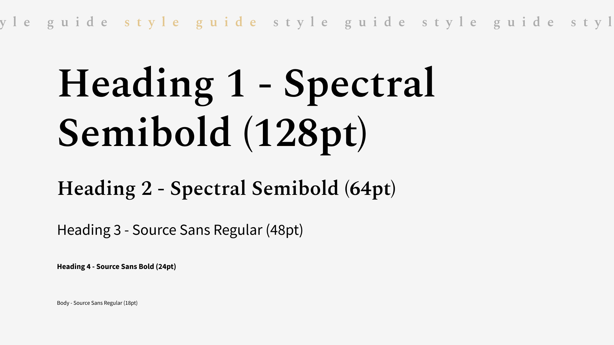
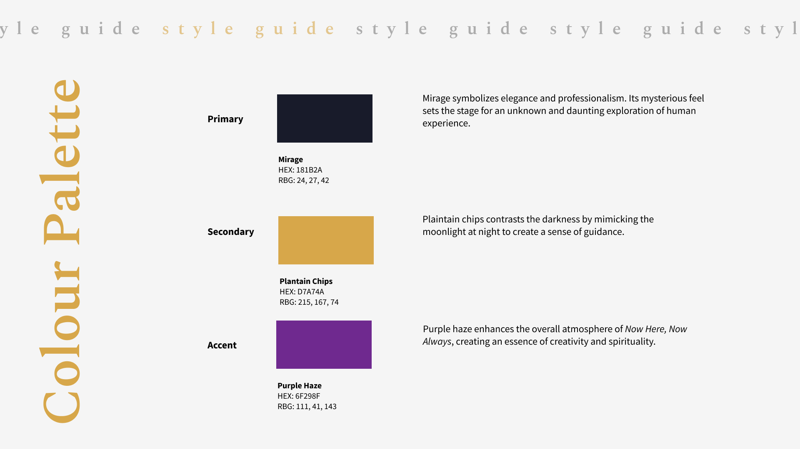
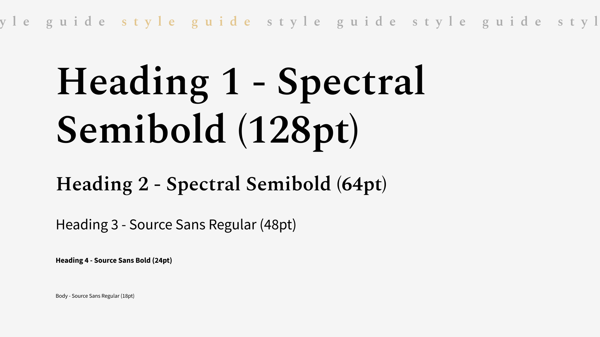
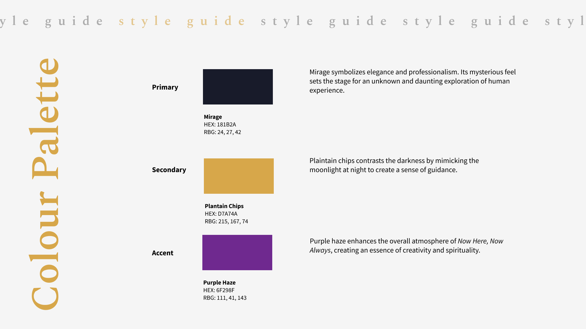

Captivating Performance & Specialized Microsite
"Now here, Now always" is a captivating contemporary dance theater performance, inspired by Nederlands Dans Theater, that pushes boundaries and explores themes resonating deeply with modern audiences through dynamic choreography, evocative storytelling, and immersive visuals. My team of six collaborated to create a specialized microsite aimed at providing audience members with a comprehensive understanding of the theme while enabling convenient ticket booking and seamless program viewing. Through careful design and functionality, we ensured that the process was seamless for all visitors, making it easy for them to secure their seats for this remarkable performance.
Direction
Who: Our target audience comprises individuals well acquainted with contemporary dance theater,
particularly the works of Nederlands Dans Theater.
What: The microsite emphasizes visual engagement while minimizing reliance on micro-interactions. It
presents concise descriptions of the show, offering insights into its thematic elements. Given the
performance's three play periods, the site displays comprehensive information on each segment.
Why: We selected visual elements to effectively convey the complexities of humanity, intending to
resonate with frequent dance audiences through concise yet compelling content.

 



Project Overview: Research to Development
We began our project by thoroughly researching the preferences of our target audience and delving into
the thematic essence of "Now here, Now always." Through collaborative brainstorming sessions, we
generated design concepts that captured the essence of the performance while staying true to
contemporary design principles.
Utilizing Figma, we developed wireframes, prototypes, and a mockup to visualize the microsite's layout
and functionality before diving into HTML and CSS coding. This iterative design process ensured seamless
navigation and optimal user experience across various devices.
During the development phase, HTML and CSS were employed to translate our design vision into a
responsive, functional prototype. Rigorous testing and debugging were conducted to address compatibility
issues and ensure cross-platform accessibility.

Microsite Mockup
Explore our specialized microsite designed to offer audience members a deep dive into the thematic essence of the performance. Here, you'll find detailed insights into the themes explored in "Now here, Now always," along with detailed program information. Our user-friendly interface also facilitates a convenient ticket booking process, ensuring a seamless experience from exploration to attendance.


Effective Teamwork for Microsite Success
Throughout the project, effective communication and teamwork were essential, allowing us to coordinate efforts and address challenges collectively. Regular checkpoints and milestone evaluations facilitated ongoing improvement, resulting in a microsite seamlessly blending captivating visuals with informative content. By following user-centric design principles and drawing on our expertise in HTML, CSS, and design, we crafted a microsite that not only reflects our vision but also delivers an exceptional user experience.